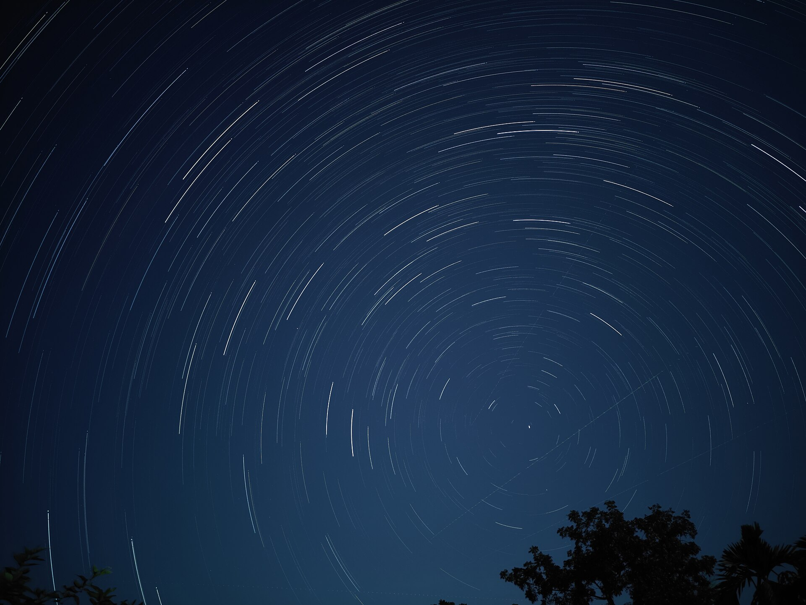

Every prediction on this site starts from one picture: the sky as a sphere turning about an axis. By the end of this page you can say, for any star and any place on Earth, whether the star rises, how high it climbs, and how long it stays up.
1 · ObservationCircles about one point
Watch the sky for a night. Every star rises in the east, climbs to its highest point due south (for a northern observer), and sets in the west. The paths are circles, all parallel to each other, and the stars keep their distances from one another as they turn.


Ptolemy says what gave the idea away: "the revolution of the ever-visible stars, which was observed to be circular, and always taking place about one centre, the same [for all]" (Almagest I 3). That centre is the celestial pole. Today the star Polaris lies 0.63° from it.
Two numbers describe the motion. A star comes back to the same place after 23 h 56 min 04 s of clock time, about 4 minutes short of a day; page 1.3 explains the difference. And the pole stands above the north point of the horizon at an altitude equal to the observer's latitude $\varphi$: 31.2° at Alexandria, 41.9° at Rome, 51.5° in London.
So the sky depends on where you stand. Travelling north, "the more of the southern stars disappear and the more of the northern stars appear" (Almagest I 4). Canopus, the second brightest star, can be seen from Rhodes but never from Rome.
In the figure
- horizon
- the observer's ground plane; N, E, S, W are its cardinal points
- Z
- the zenith, straight overhead
- meridian
- the dotted circle through N, Z and S; a star is highest when it crosses it
- P, P′
- the north and south celestial poles; the sky turns about the axis PP′
- equator
- the great circle 90° from P
- dots
- twenty bright stars
- star
- the chosen star and its daily circle: solid above the horizon, dashed below
- circles
- Ptolemy's two circles of radius $|\varphi|$ (Almagest II 6): stars inside the one around the raised pole never set; stars inside the other never rise
Read-out
- $\delta$
- the star's angular distance from the equator, its declination
- $H$
- the angle the sky has turned since the star crossed the meridian
- $a$
- its altitude above the horizon (negative: below it)
- $a_\text{max},\ a_\text{min}$
- its highest and lowest altitude in a turn
2 · ModelA turning sphere of directions
Directions, not distances
Seen from anywhere on Earth, the stars keep the same sizes and the same distances from each other. For the sky, the Earth is a point: "the planes drawn through the observer's lines of sight […] which we call 'horizons', always bisect the whole heavenly sphere" (Almagest I 6).
So a star is just a direction: a unit vector $\mathbf s$. The celestial sphere is the set of all such directions, and nothing on it has a distance. The model is that this whole set turns rigidly, at a constant rate, about one axis.
The turning sky
Pick a frame fixed to the sky: $z$ towards the pole P, $x$ towards the point where the equator crosses the meridian above the horizon, $y$ towards the east. Turning by an angle $\theta$ about the $z$ axis is
$$R_z(\theta) = \begin{pmatrix} \cos\theta & -\sin\theta & 0 \\ \sin\theta & \cos\theta & 0 \\ 0 & 0 & 1 \end{pmatrix}.$$With $\theta > 0$, $R_z(\theta)$ carries the $x$ axis towards the $y$ axis: from the meridian towards the east. Seen from outside the sphere, above P, that is an anticlockwise turn.
The sky turns the other way. A star crosses the meridian and then moves west, so seen from above P the sky turns clockwise. (From the ground, facing the pole, the same motion looks anticlockwise.) A turn by an angle $H$ to the west is therefore a turn by $-H$ in the sense of $R_z$.
A star at angular distance $\delta$ from the equator crosses the meridian at $(\cos\delta, 0, \sin\delta)$. Let $H$ be the angle the sky has turned since then, the hour angle: it grows with time, by about 15° an hour (page 1.3 ties it to the clock). Then
$$\mathbf s(H) = R_z(-H) \begin{pmatrix} \cos\delta \\ 0 \\ \sin\delta \end{pmatrix} = \begin{pmatrix} \cos\delta\cos H \\ -\cos\delta\sin H \\ \sin\delta \end{pmatrix}.$$The $z$ component never changes: every star moves on a circle parallel to the equator, as observed. The angle $\delta$ is the star's declination; page 1.2 adds the second coordinate that fixes where on the circle it is.
The observer
The observer's own frame is the horizon frame: $x$ towards the south point, $y$ east, $z$ towards the zenith.
Why south and not north? For a northern observer the equator crosses the meridian south of the zenith, so the sky frame's $x$ axis points south too. With both $x$ axes on the same side and the east axis shared, the two frames differ by one tilt. An $x$ axis pointing north would force $y$ to point west, to keep the frame right-handed, and minus signs would appear everywhere. (Meeus, ch. 13, also counts the azimuth from the south.)
So the sky frame is the horizon frame tilted about the east–west axis, $y$, by a rotation
$$R_y(\theta) = \begin{pmatrix} \cos\theta & 0 & \sin\theta \\ 0 & 1 & 0 \\ -\sin\theta & 0 & \cos\theta \end{pmatrix}, \qquad R_y(\theta) \begin{pmatrix} 0 \\ 0 \\ 1 \end{pmatrix} = \begin{pmatrix} \sin\theta \\ 0 \\ \cos\theta \end{pmatrix}.$$Which angle? The tilt must carry the zenith direction onto the pole P. P stands on the meridian at altitude $\varphi$ in the north, so it lies $90^\circ - \varphi$ from the zenith, on the north side ($-x$). With $\theta > 0$, $R_y(\theta)$ tips $z$ towards $+x$, the south. We need a tip of $90^\circ - \varphi$ towards the north, so $\theta = -(90^\circ - \varphi) = \varphi - 90^\circ$:
$$\mathbf s_\text{hor} = R_y(\varphi - 90^\circ)\, \mathbf s.$$Three checks:
- The pole: $R_y(\varphi - 90^\circ)(0, 0, 1)^T = (-\cos\varphi, 0, \sin\varphi)^T$, north at altitude $\varphi$.
- The equator's meridian point: $R_y(\varphi - 90^\circ)(1, 0, 0)^T = (\sin\varphi, 0, \cos\varphi)^T$, south at altitude $90^\circ - \varphi$.
- At the north pole, $\varphi = 90^\circ$: no tilt, and P is at the zenith.
Altitude as a dot product
The altitude $a$ of a star is its angle above the horizon plane. The zenith is perpendicular to that plane, so the angle between the star and the zenith, the zenith distance, is $90^\circ - a$.
For two unit vectors, the dot product is the cosine of the angle between them: $\hat{\mathbf z} \cdot \mathbf s = \cos(90^\circ - a) = \sin a$. In the horizon frame $\hat{\mathbf z} = (0, 0, 1)$, and the dot product just picks out the $z$ component of $\mathbf s_\text{hor}$.
The star is simpler in the sky frame, so move the zenith there instead. A rotation keeps dot products: $(0,0,1)^T \cdot (R\,\mathbf s) = (R^T (0,0,1)^T) \cdot \mathbf s$. The vector $R^T(0, 0, 1)^T$ is the third row of $R_y(\varphi - 90^\circ)$, the zenith seen from the sky frame: $\hat{\mathbf z} = (\cos\varphi, 0, \sin\varphi)$. So
This one line is the whole model. Everything below, and the altitude read-out of Figure 1, comes from it.
Who turns?
Suppose instead that the stars stand still and the Earth turns eastward about the same axis. Then the star $\mathbf s_0$ is fixed and the zenith moves, $\hat{\mathbf z}(H) = R_z(H)\, \hat{\mathbf z}_0$. Because a rotation keeps dot products and $R_z(H)^T = R_z(-H)$,
$$\hat{\mathbf z}(H) \cdot \mathbf s_0 = \big(R_z(H)\, \hat{\mathbf z}_0\big) \cdot \mathbf s_0 = \hat{\mathbf z}_0 \cdot \big(R_z(-H)\, \mathbf s_0\big).$$The altitude is the same at every instant. No observation of the sky alone can tell the two apart. Ptolemy grants this, "there is perhaps nothing in the celestial phenomena which would count against that hypothesis", and rejects the turning Earth on physical grounds (Almagest I 7).
Copernicus turns the argument around: "if any motion is ascribed to the earth, in all things outside it the same motion will appear, but in the opposite direction" (De Revolutionibus I 5). He credits the idea to Heraclides, Ecphantus and Hicetas.
In the figure
- P
- the north celestial pole, now held still with all the stars
- equator
- the great circle 90° from P
- dots
- the bright stars of Figure 1, fixed
- Z
- the observer's zenith; the Earth's turn carries it eastward (arrow) along the dashed circle, $90^\circ - \varphi$ from P
- horizon
- the observer's horizon, the great circle 90° from Z, turning with it
- star
- the chosen star
- arc
- the angle from Z to the star, $90^\circ - a$
Read-out
- $\angle(\hat{\mathbf z}, \mathbf s)$
- the angle between the zenith and the star
- $a$
- the altitude, $90^\circ$ minus that angle
Highest, lowest, and how long up
A star is highest at $H = 0$, where $\sin a = \cos(\varphi - \delta)$, and lowest at $H = 180^\circ$, where $\sin a = -\cos(\varphi + \delta)$:
$$a_\text{max} = 90^\circ - |\varphi - \delta|, \qquad a_\text{min} = |\varphi + \delta| - 90^\circ.$$These sort the stars into three classes. For a northern observer ($\varphi > 0$) a star never sets when $a_\text{min} > 0$, and never rises when $a_\text{max} < 0$:
$$\text{never sets:}\ \ \delta > 90^\circ - \varphi, \qquad \text{never rises:}\ \ \delta < \varphi - 90^\circ.$$This is Ptolemy's rule: the circle "which has the north pole of the equator as its pole, and the elevation of the pole as its radius, is always visible, and all stars within that circle are always visible" (Almagest II 6).
In modern terms: draw the small circle centred on the north celestial pole, with an angular radius equal to the pole's altitude $\varphi$. It just touches the horizon at the north point. A star inside it is less than $\varphi$ from the pole: $90^\circ - \delta < \varphi$, which is again $\delta > 90^\circ - \varphi$.
As the sky turns, that star stays at the same distance from P, so it never gets as far as the horizon. Its mirror image around the south pole holds the stars that never rise. Both are the dashed purple circles of Figure 1.
Every other star rises and sets. It sets when $a = 0$, at the hour angle $H_0$ with
$$\cos H_0 = -\tan\varphi \tan\delta,$$and it is up for $|H| < H_0$: a fraction $f = H_0 / 180^\circ$ of each turn. Since $\arccos(-x) = 180^\circ - \arccos x$, a star and its mirror image across the equator share the turn: $f(\delta) + f(-\delta) = 1$.
On the equator itself $\delta = 0$, so $H_0 = 90^\circ$ and $f = \tfrac12$ at every latitude. That is why Ptolemy calls the equator "the only [such parallel circle] which is always bisected by the horizon" (Almagest I 8), and why the Sun on it gives equal day and night.
(a) altitude through one turn
(b) the three classes of star
In panel (a)
- curve
- the altitude $a$ against the hour angle $H$
- horizon
- the line $a = 0$
- band
- the part of the turn spent above the horizon
- dots
- rising and setting, at $H = \mp H_0$
In panel (b)
- band
- stars that never set
- band
- stars that never rise
- lines
- stars up for 25%, 50% and 75% of the turn; the 50% line is the equator, $\delta = 0$
- dot
- the chosen $\varphi$ and $\delta$
Read-out
- $H_0$
- the hour angle of setting
- $f$
- the fraction of the turn above the horizon, and how long that is on a clock
3 · FitMeasuring the axis and the stars
The model has three kinds of parameter: the rate of the turn, the tilt of the axis, which is the latitude $\varphi$, and each star's declination $\delta$. Each comes from timing or measuring a star on the meridian.
The rate. Time the same star crossing the meridian on two nights. The modern value is 23 h 56 min 04.09 s of clock time, or 15.0411° per hour.
Latitude and declination together. Take a star that never sets and measure its altitude at both meridian crossings, counted from the north point (so the upper one may pass 90°). From the formulas for $a_\text{max}$ and $a_\text{min}$,
$$h_\uparrow = 90^\circ + \varphi - \delta, \quad h_\downarrow = \varphi + \delta - 90^\circ \quad\Longrightarrow\quad \varphi = \frac{h_\uparrow + h_\downarrow}{2}, \quad 90^\circ - \delta = \frac{h_\uparrow - h_\downarrow}{2}.$$Try it on Kochab from Alexandria. The real sky shows it 47.166° and 15.309° above the north point. The fit gives $\varphi = 31.238^\circ$ and $\delta = 74.071^\circ$: 2.3′ and 1.3′ too large. The air lifts the low crossing (3.6′) more than the high one (0.9′), and section 4 shows how.
Ptolemy measured the meridian altitudes of the noon Sun with a bronze ring and a stone quadrant (Almagest I 12). He gives the equator's distance from the zenith at Alexandria, which is the latitude, as 30°58′ (30.97°, Almagest V 12), 14′ below the modern 31°12′.
4 · TestThe model against the sky
The real sky for one night: each star's catalogue position, carried to 2026 for its proper motion and precession, turned by the Earth's rotation. The model's star is fitted on that same night, so its $\delta$ is right. One thing is still missing from the model: the air.
Starlight bends as it enters the atmosphere, more the lower it comes in. For standard air the lift is
$$R = \frac{1.02'}{\tan\!\left(a + \dfrac{10.3^\circ}{a + 5.11^\circ}\right)} \qquad (a \text{ in degrees}),$$Sæmundsson's formula (Meeus 16.4): 29′ at the horizon, 5.4′ at 10°, 1.0′ at 45°. A star seen exactly on the horizon is really 34.4′ below it. Other effects (aberration, nutation) shift a star by under 1′, the same all night, so the fit absorbs them.
The model's star is at its true altitude $a$; the sky shows it at $a + R$. So the model's error is $\Delta a = a_\text{model} - a_\text{real} = -R$: Figure 4 is the refraction itself, followed through one turn of the sky. It is plotted as an error, model minus sky, as every error on this site will be.
In the figure
- curve
- $\Delta a = a_\text{model} - a_\text{real} = -R$ in arcminutes, while the real star is above the horizon
- dots
- the model's rising and setting
- dots
- the real rising and setting
Read-out
- $\Delta t$
- how much earlier the real star rises, and later it sets
- up
- time above the horizon, model and real
High up the model barely misses: 1.0′ at an altitude of 45°, 2.7′ at 20°. Near the horizon it puts the star up to 34′ too low. So real stars rise earlier and set later than the model says: Sirius seen from Rome by 3.3 minutes at each end, so it is up for 10 h 00 min instead of 9 h 53 min.
The miss grows for stars that skim the horizon. Canopus, seen from Rhodes, climbs only 1.3° and crosses the horizon at a shallow angle. The same 34′ then buys 14.2 minutes at each end.
The site has no longitude to test yet, so no error curve on this page. It appears on page 2.1, once the Sun has a model.
5 · ResidualWhat the sphere leaves out
The air. Refraction belongs to the atmosphere, not to the sky, and near the horizon it changes with the weather by several arcminutes. The models on this site predict positions as if there were no air; the pages that time risings and settings add $R$ back.
The "fixed" stars drift. The fitted declinations do not stay fitted. Polaris is 0.63° from the pole now, will pass closest (27.6′) around 2102, and was 12.5° away in Hipparchus' time. Page 2.3 finds the cause.
Some lights wander. The Sun, the Moon and the planets turn with the sphere but do not keep their places on it. Ptolemy calls this the second motion, "towards the east and opposite to [the motion of] those stars which preserve their mutual distances" (Almagest I 8). The rest of this site is about that motion.
To follow a body that moves on the sphere, "turning about the pole" is not enough: we need a name for every direction, and a way to change names. That is page 1.2.
Exercises
Show that, for $\varphi > 0$, a star never sets exactly when $\delta > 90^\circ - \varphi$, and never rises exactly when $\delta < \varphi - 90^\circ$. Then, with Figure 1, sort Dubhe, Capella, Deneb, Vega and Canopus at Rhodes ($36^\circ$), Rome ($41.9^\circ$) and London ($51.5^\circ$).
A star never sets when even its lowest point is above the horizon: use $a_\text{min} = |\varphi + \delta| - 90^\circ$, and say why $\varphi + \delta > 0$ for such a star.
If the star never sets, its lowest point is above the horizon, so $a_\text{min} > 0$, i.e. $|\varphi + \delta| > 90^\circ$. With $\varphi > 0$ and $|\delta| \le 90^\circ$, the case $\varphi + \delta < -90^\circ$ is impossible, so $\varphi + \delta > 90^\circ$, i.e. $\delta > 90^\circ - \varphi$.
Likewise it never rises when $a_\text{max} < 0$: $|\varphi - \delta| > 90^\circ$. Only $\varphi - \delta > 90^\circ$ is possible, so $\delta < \varphi - 90^\circ$.
With the J2000 declinations (Dubhe $61.75^\circ$, Capella $46.00^\circ$, Deneb $45.28^\circ$, Vega $38.78^\circ$, Canopus $-52.70^\circ$):
- Rhodes: only Dubhe never sets (lowest point $7.75^\circ$); Canopus rises, but climbs only $1.30^\circ$.
- Rome: only Dubhe never sets ($13.65^\circ$); Capella just dips below ($-2.10^\circ$); Canopus never rises ($a_\text{max} = -4.60^\circ$).
- London: Dubhe, Capella, Deneb and Vega all never set, Vega only just (its lowest point is $0.28^\circ$ up); Canopus never rises.
Capella never sets north of $44.00^\circ$, Vega north of $51.22^\circ$. Canopus can be seen only south of $37.30^\circ$.
(a) For what fraction of the day is Sirius ($\delta = -16.72^\circ$) above the horizon at Alexandria ($31.2^\circ$), Rome and London? (b) Ptolemy takes Rhodes at $\varphi = 36^\circ$ with the obliquity $\varepsilon = 23^\circ 51' 20''$ ($23.856^\circ$), the Sun's declination at the summer solstice. Find the longest day (Almagest II 2–3). Check both in Figure 3.
$f = H_0 / 180^\circ$ with $\cos H_0 = -\tan\varphi\tan\delta$. For the Sun, the hour angle grows $15^\circ$ per hour of the clock.
(a) $-\tan\varphi\tan\delta$ is $0.1819$ at Alexandria, $0.2695$ at Rome and $0.3776$ in London. So $H_0 = 79.52^\circ$, $74.37^\circ$ and $67.82^\circ$, and $f = 0.442$, $0.413$ and $0.377$. On a clock (one turn takes 23 h 56 min) that is 10 h 34 min, 9 h 53 min and 9 h 01 min.
(b) $-\tan 36^\circ \tan 23^\circ 51' 20'' = -0.3213$, so $H_0 = 108.741^\circ$. The Sun is up for $2H_0 / 15^\circ = 14.4988$ hours: Ptolemy's $14\tfrac12$ hours. The shortest day, at $\delta = -\varepsilon$, is $24 - 14.4988 = 9.5012$ hours, as $f(\delta) + f(-\delta) = 1$ requires.
Ptolemy also runs it backwards (II 3): a longest day of $14\tfrac12$ hours gives $\varphi = 36.01^\circ$.
At an equinox the Sun is on the equator, so the model gives 12 hours of daylight everywhere. Yet on 20 March 2026 at Greenwich ($\varphi = 51.48^\circ$), the real Sun rises at 06:02:53 and sets at 18:13:03 (UT): 12 h 10 min. Where do the extra 10 minutes come from?
Sunrise is when the top edge of the Sun appears; the Sun's radius is 16′. How fast does the Sun climb at sunrise? Differentiate the altitude formula with respect to $H$.
Sunrise and sunset are counted when the Sun's top edge touches the seen horizon. The centre is then $34' + 16' = 50'$ below the true horizon: refraction plus the radius.
How fast does the Sun climb there? Differentiate $\sin a = \sin\varphi \sin\delta + \cos\varphi\cos\delta\cos H$:
$$\cos a \, \frac{da}{dH} = -\cos\varphi \cos\delta \sin H.$$At sunrise on the equinox $a \approx 0$, $\delta = 0$ and $H = -90^\circ$ (a quarter turn before noon), so $da/dH = \cos\varphi$. The Sun's hour angle grows $15^\circ$ per hour, so it climbs $15^\circ \cos\varphi = 9.34^\circ$ per hour at Greenwich.
Geometrically: the Sun runs along the equator at $15^\circ$ an hour, and the equator cuts the horizon at the east point at an angle $90^\circ - \varphi$. Only the share $\sin(90^\circ - \varphi) = \cos\varphi$ of that motion is upward.
Climbing 50′ ($0.833^\circ$) at $9.34^\circ$ per hour takes about 5.4 min, at each end of the day: about 10.7 min in all.
The script splits the reference Sun's 12 h 10 min 10 s exactly:
- refraction: +7.3 min;
- the Sun's radius: +3.4 min;
- the Sun's own motion that day: −0.5 min. It sits just south of the equator at noon, and its day is not a turn of the stars.
The model is not wrong about the sky; it has no air and treats the Sun as a point.
Sources
- Ptolemy, Almagest (transl. G. J. Toomer, 1984): I 3, I 4, I 6, I 7, I 8 (the sphere, the Earth as a point, the two motions); I 12 (the meridian instruments); II 1–3 and II 6 (latitude, the longest day at Rhodes, the ever-visible circle); V 12 (Alexandria).
- Copernicus, De Revolutionibus (transl. E. Rosen), I 5 [ff. 3r–3v].
- R. Fitzpatrick, A Modern Almagest, §§ 2.1–2.2 and 2.8–2.10. He writes $L$ for the latitude, here $\varphi$.
- J. Meeus, Astronomical Algorithms (2nd ed., 1998), ch. 12 (sidereal time), 13 (altitude), 15 (rising and setting), 16 (refraction).
- Star positions: SIMBAD (CDS, Strasbourg), ICRS J2000, retrieved 2026-10-17. Precession: J. Vondrák, N. Capitaine, P. Wallace (2011).
- Every number on this page:
tools/numbers/1.1-turning-sky.js.